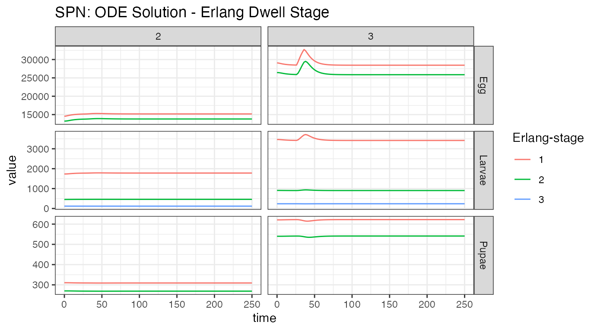
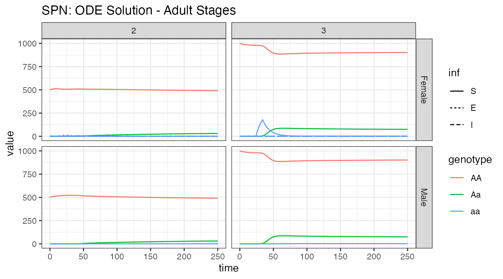

MGDrivE2: SEIR Epidemiological Dynamics
epi-SEIR.RmdTable of Contents
Preface
This vignette describes the SEIR (Susceptible-Exposed-Infectious-Recovered) human model of epidemiological dynamics. It is intended that readers are already familiar with the content in the vignettes “MGDrivE2: One Node Epidemiological Dynamics” and “MGDrivE2: Metapopulation Network Epidemiological Dynamics”, as this vignette primarily describes the coupling of the SEIR human model to the system. The SEIR model is appropriate for strongly immunizing diseases (such as Yellow fever or Japanese Encephalitis) which also have a latent period (E). The E state represents the time needed for the pathogen to colonize and replicate within the host before the host becomes infectious to mosquitoes. This time where an individual is infected but not infected is called the latent period, or sometimes, the exposed period (Martcheva 2015). Because this vignette assumes familiarity with the other vignettes, we will be brief about any parts of setting up the simulation not specific to the SEIR human model.
We start by loading the MGDrivE2 package, as well as the MGDrivE package for access to inheritance cubes, ggplot2 for graphical analysis, and Matrix for sparse matrices used in migration. We will use the basic cube to simulate Mendelian inheritance for this example.
# simulation functions
library(MGDrivE2)
#> Loading MGDrivE2: Mosquito Gene Drive Explorer Version 2
# inheritance patterns
library(MGDrivE)
#> Loading MGDrivE: Mosquito Gene Drive Explorer
# plotting
library(ggplot2)
# sparse migration
library(Matrix)
# basic inheritance pattern
cube <- MGDrivE::cubeMendelian()One Node Simulations
The first section of this vignette describes how to simulate a coupled SEI-SEIR mosquito-human model within a single node.
Parameterization
The majority of parameters are concerned with the genetic and mosquito lifecycle model, as used in the SEI-SIS model, so the setup of the SIS-SEIR model is nearly identical, with the addition of a single parameter, delta, the inverse duration of the latent state (the dwell time in E). We consider a situation where an equilibrium population of 1000 female mosquitoes exists. For definition of the epidemiological parameters, please see the vignette “MGDrivE2: One Node Epidemiological Dynamics” and “MGDrivE2: One Node Lifecycle Dynamics” for the entomological (lifecycle) parameters.
Additionally, we set the simulation time to 300 days and store output from each day.
# entomological and epidemiological parameters
theta <- list(
# lifecycle parameters
qE = 1/4,
nE = 2,
qL = 1/3,
nL = 3,
qP = 1/6,
nP = 2,
muE = 0.05,
muL = 0.15,
muP = 0.05,
muF = 0.09,
muM = 0.09,
beta = 16,
nu = 1/(4/24),
# epidemiological parameters
NH = 250,
X = c(1,0,0,0), # 0% disease incidence
NFX = 1000,
f = 1/3,
Q = 0.9,
b = 0.55,
c = 0.15,
delta = 1/5,
r = 1/14,
muH = 1/(62*365),
qEIP = 1/11,
nEIP = 3
)
# simulation parameters
tmax <- 300
dt <- 1Next, we need to augment the cube with genotype specific transmission efficiencies; b and c, the mosquito to human and human to mosquito transmission efficiencies. We assume that transmission from human to mosquito is not impacted in modified mosquitoes, but mosquito to human transmission is significantly reduced in modified mosquitoes. For detailed descriptions of these parameters for modelling malaria transmission, see Smith & McKenzie (2004) for extensive discussion.
Initialization of the Petri Net
Just like the SEI-SIS disease transmission model, the SIS-SEIR sits “on top” of the existing MGDrivE2 structure. The only difference between these two models are the human dynamics. See the “MGDrivE2: One Node Epidemiological Dynamics” vignette for more details about how this is done.
With the parameters defined, we use SIS-SEIR model specific functions to setup the places and transitions in the Petri Net.
Equilibrium Conditions and Hazard Functions
Once the initial markings of the Petri Net are setup, we can combine them with the parameters defined above to calculate the population distribution, at equilibrium, and the initial conditions.
It should be noted that for realistic parameter values, this model only has a non-trivial equilibrium when \(\mu_{H} < \frac{\mu_{H} \cdot N_{H} - r \cdot I_{H}}{I_{H}}\), which results in extremely unrealistic (short) lifespans. The other two equilibrium points are the trivial disease free equilibrium when \(\lambda_{H}=0\) and the normal \((\lambda_{H} > 0)\) case when \(R_{H}(\infty)\rightarrow N_{H}\), that is, for realistic values of parameters, all surviving individuals will become infected. For that reason we do not explicitly calculate the endemic equilibrium (where \(\lambda_{H} = a \cdot b \cdot \frac{1}{N_{H}} \cdot I_{V}\) is the force of infection on humans). In general the SEIR human model should be used to evaluate the impact of gene drive interventions on one-off epidemic situations (e.g.; does releasing large numbers of modified mosquitoes 10 days after initial cases appear make a significant difference in final outcome), rather than for investigating endemic diseases, which require more complex models with waning immunity.
The function equilibrium_SEI_SEIR() calculates the equilibrium distribution of female mosquitoes across SEI stages, based on human populations and force-of-infection, then calculates all other equilibria. We set the logistic form for larval density-dependence in these examples by specify log_dd = TRUE.
# SEI mosquitoes and SEIR humans equilibrium
# outputs required parameters in the named list "params"
# outputs initial equilibrium for adv users, "init
# outputs properly filled initial markings, "M0"
initialCons <- equilibrium_SEI_SEIR(params = theta, log_dd = TRUE, spn_P = SPN_P,
cube = cube)Finally, we make the hazard functions for the ODE approximation and the discrete stochastic model.
# approximate hazards for continous approximation
approx_hazards <- spn_hazards(spn_P = SPN_P, spn_T = SPN_T, cube = cube,
params = initialCons$params, type = "SEIR",
log_dd = TRUE, exact = FALSE, tol = 1e-8,
verbose = FALSE)
# exact hazards for integer-valued state space
exact_hazards <- spn_hazards(spn_P = SPN_P, spn_T = SPN_T, cube = cube,
params = initialCons$params, type = "SEIR",
log_dd = TRUE, exact = TRUE, verbose = FALSE)Simulation of Fully Specified SPN Model
In order to simulate an epidemic, we will introduce 100 exposed humans at day 5. We will assume that by day 25 the decision is made to release modified mosquitoes. Five releases are preformed every other day. Remember, it is critically important that the event names match a place name in the simulation. The simulation function checks this and will throw an error if the event name does not exist as a place in the simulation. This format is used in MGDrivE2 for consistency with solvers in deSolve.
# releases
r_times <- seq(from = 25, length.out = 5, by = 2)
r_size <- 50
m_events <- data.frame("var" = paste0("F_", cube$releaseType, "_", cube$wildType, "_S"),
"time" = r_times,
"value" = r_size,
"method" = "add",
stringsAsFactors = FALSE)
h_events <- data.frame("var" = "H_E",
"time" = 5,
"value" = 100,
"method" = "add",
stringsAsFactors = FALSE)
events <- rbind(m_events, h_events)Deterministic: ODE Solutions
As in the “MGDrivE2: One Node Lifecycle Dynamics” vignette, we will first numerically simulate the mean-field ODE approximation to the stochastic trajectory, using the approximate hazards suitable for continuous-state approximation (see ?spn_hazards()). We then look at the disease dynamics in humans and female mosquitoes.
# run deterministic simulation
ODE_out <- sim_trajectory_R(x0 = initialCons$M0, t0 = 0, tt = tmax, dt = dt, S = S,
hazards = approx_hazards, sampler = "ode", method = "lsoda",
events = events, verbose = FALSE)
# summarize females/humans by genotype
ODE_female <- summarize_females_epi(out = ODE_out$state,spn_P = SPN_P)
ODE_humans <- summarize_humans_epiSEIR(out = ODE_out$state)
# add species for plotting
ODE_female$species <- "Mosquitoes"
ODE_humans$species <- "Humans"
# plot
ggplot(data = rbind(ODE_female, ODE_humans) ) +
geom_line(aes(x = time, y = value, color = genotype, linetype = inf)) +
facet_wrap(. ~ species, scales = "free_y") +
theme_bw() +
ggtitle("SPN: ODE solution")We see the initial influx of humans with latent infections, then the quick spread until most of the population has been infected and recovers. However, only a small portion of the mosquito population gets infected and transmits disease. We see the release of modified female mosquitoes at time = 25, and their quick spread into the population. As more humans enter the recovered state, and do not transmit disease anymore, we see the amount of infected mosquitoes decline as well.
Stochastic: Tau-leaping Solutions
As a further example, we run a single stochastic realization of the same simulation, using the tau sampler with \(\Delta t = 0.2\), approximating 5 jumps per day, and plotting the same output for comparison.
# delta t
dt_stoch <- 0.2
# run tau-leaping simulation
PTS_out <- sim_trajectory_R(x0 = initialCons$M0, t0 = 0, tt = tmax, dt = dt,
dt_stoch = dt_stoch, S = S, hazards = exact_hazards,
sampler = "tau", events = events, verbose = FALSE)
# summarize females/humans by genotype
PTS_female <- summarize_females_epi(out = PTS_out$state,spn_P = SPN_P)
PTS_humans <- summarize_humans_epiSEIR(out = PTS_out$state)
# add species for plotting
PTS_female$species <- "Mosquitoes"
PTS_humans$species <- "Humans"
# plot
ggplot(data = rbind(PTS_female, PTS_humans) ) +
geom_line(aes(x = time, y = value, color = genotype, linetype = inf)) +
facet_wrap(. ~ species, scales = "free_y") +
theme_bw() +
ggtitle("SPN: Tau-leaping Approximation")Encouragingly, we see very similar dynamics from this stochastic realization as we saw in the ODE solution. This implies that \(\Delta t = 0.2\) is a good approximation, though one should do many more repetitions before drawing any conclusions.
Metapopulation Network Simulations
The second section of this vignette describes how to simulate a coupled SEI-SEIR mosquito-human model in a metapopulation network. This section largely follows the vignette “MGDrivE2: Metapopulation Network Epidemiological Dynamics”.
Parameterization
To setup a three-node metapopulation network, with 1000 females in the mosquito-only node, 500 adult female mosquitoes and 250 humans in the shared location, and 250 humans in the human-only node, we first update the parameter object (theta) to reflect the new populations. We then set the simulation time to 300 days, but store output every other day this time.
We will be using the same inheritance cube for these simulations, so none of the parameters for that need updated.
# 3-population entomological and epidemiological parameters
theta <- list(
# lifecycle parameters
qE = 1/4,
nE = 2,
qL = 1/3,
nL = 3,
qP = 1/6,
nP = 2,
muE = 0.05,
muL = 0.15,
muP = 0.05,
muF = 0.09,
muM = 0.09,
beta = 16,
# epidemiological parameters
NH = 250,
X = c(1,0,0,0),
NFX = 500, # needed if any X[ ,3] == 0
f = 1/3,
Q = 0.9,
b = 0.55,
c = 0.15,
delta = 1/5,
nu = 1/5,
r = 1/14,
muH = 1/(62*365),
qEIP = 1/11,
nEIP = 3
)
# simulation parameters
tmax <- 300
dt <- 2Initialization of the Petri Net
Next, we create the markings for a three-node Petri Net. We specify edges in the movement network separately for humans and mosquitoes (in h_move and m_move, respectively). Humans can move back and forth between the humans-only and both nodes, and mosquitoes between the mosquitoes-only and both nodes. These matrices are needed to generate the set of transitions. For more information, see the “MGDrivE2: Metapopulation Network Epidemiological Dynamics” vignette. Once the movement is specified, we can setup the places and transitions for the Petri Net.
# nodetypes
node_list <- c("h", "b", "m")
num_nodes <- length(node_list)
# human movement
h_move <- matrix(data = FALSE, nrow = num_nodes, ncol = num_nodes,
dimnames = list(node_list, node_list))
h_move[1,2] <- TRUE
h_move[2,1] <- TRUE
# mosquito movement
m_move <- matrix(data = FALSE, nrow = num_nodes, ncol = num_nodes,
dimnames = list(node_list, node_list))
m_move[2,3] <- TRUE
m_move[3,2] <- TRUE
# Places and transitions
SPN_P <- spn_P_epiSEIR_network(node_list = node_list, params = theta, cube = cube)
SPN_T <- spn_T_epiSEIR_network(node_list = node_list, spn_P = SPN_P, params = theta,
cube = cube, h_move = h_move, m_move = m_move)
# Stoichiometry matrix
S <- spn_S(spn_P = SPN_P, spn_T = SPN_T)Equilibrium Conditions and Hazard Functions
Now that we have set up the structural properties of the Petri Net, we can calculate the population equilibrium, and the initial conditions, from parameters defined earlier ( theta ). Remember, these are node-by-node equilibria, not an equilibrium over the entire network.
# SEI mosquitoes and SEIR humans equilibrium
# outputs required parameters in the named list "params"
# outputs initial equilibrium for adv users, "init
# outputs properly filled initial markings, "M0"
initialCons <- equilibrium_SEI_SEIR(params = theta,node_list = node_list,
NF = 1000,
phi=0.5,
NH = 250,
log_dd=TRUE,
spn_P=SPN_P,
pop_ratio_Aq=NULL, pop_ratio_F=NULL,
pop_ratio_M=NULL, cube=cube)We’ll make the movement matrices using the same parameters as “MGDrivE2: Metapopulation Network Epidemiological Dynamics”. Reminder, for both humans and mosquitoes, the vector of movement rates must be of length equal to the number of nodes in the matrix, and nodes from which no movement is possible (for mosquitoes, human-only nodes and vice versa for humans), should have value NaN. If you have made the logical matrices specifying allowed movement, the following code can help ascertain which elements should be NaN: apply(X = m_move, MARGIN = 1, FUN = Negate(any)). Finally we append the movement objects to the vector of parameters initialCons$params.
# calculate movement rates and movement probabilities
gam <- calc_move_rate(mu = initialCons$params$muF, P = 0.05)
# set mosquito movement rates/probabilities
# mosquitoes exist in nodes 2 and 3, not 1
mr_mosy <- c(NaN, gam, gam)
mp_mosy <- Matrix::sparseMatrix(i = c(2,3), j = c(3,2), x = 1, dims = dim(m_move))
# set human movement rates/probabilities
# humans exist in nodes 1 and 2, not 3
mr_human <- c(1/7, 1/7, NaN)
mp_human <- Matrix::sparseMatrix(i = c(1,2), j = c(2,1), x = 1, dims = dim(h_move))
# put rates and probs into the parameter list
initialCons$params$mosquito_move_rates <- mr_mosy
initialCons$params$mosquito_move_probs <- mp_mosy
initialCons$params$human_move_rates <- mr_human
initialCons$params$human_move_probs <- mp_humanNow that all the necessary parameters have been added to the named list initialCons$params, we generate the hazard functions, using the function spn_hazards(). By specifying log_dd = TRUE, we use logistic density dependence for these simulations.
Simulation of Fully Specified SPN Model
In order to simulate an epidemic, we will introduce 100 exposed humans at day 5 into node 1. We will assume that by day 25 the decision is made to release modified mosquitoes, but into node 3 only. Five releases are preformed every other day. This will allow us to see migration between human nodes, and mosquito nodes, before seeing interactions that cause disease dynamics. Remember, it is critically important that the event names match a place name in the simulation. The simulation function checks this and will throw an error if the event name does not exist as a place in the simulation. This format is used in MGDrivE2 for consistency with solvers in deSolve.
# releases
r_times <- seq(from = 25, length.out = 5, by = 2)
r_size <- 50
m_events <- data.frame("var" = paste0("F_", cube$releaseType, "_", cube$wildType, "_S_3"),
"time" = r_times,
"value" = r_size,
"method" = "add",
stringsAsFactors = FALSE)
h_events <- data.frame("var" = "H_E_1",
"time" = 5,
"value" = 100,
"method" = "add",
"stringsAsFactors" = FALSE)
events <- rbind(m_events, h_events)Deterministic: ODE Solutions
As in the “MGDrivE2: Metapopulation Network Epidemiological Dynamics” vignette, we will first numerically simulate the mean-field ODE approximation to the stochastic trajectory, using the approximate hazards suitable for continuous-state approximation (see ?spn_hazards()). Additionally, we will plot several aspects of the population using helper functions provided by MGDrivE2.
# run deterministic simulation
ODE_out <- sim_trajectory_R(x0 = initialCons$M0, t0 = 0, tt = tmax, dt = dt, S = S,
hazards = approx_hazards, sampler = "ode", method = "lsoda",
events = events, verbose = FALSE)
#> Warning in base_events(x0 = x0, events = events, dt = dt): event times do not correspond to a multiple of dt.
#> event times will be rounded up to the nearest time-step!
# summarize aquatic stages by genotype
ODE_e <- summarize_eggs_geno(out = ODE_out$state, spn_P = SPN_P)
ODE_l <- summarize_larvae_geno(out = ODE_out$state, spn_P = SPN_P)
ODE_p <- summarize_pupae_geno(out = ODE_out$state, spn_P = SPN_P)
# add stage name
ODE_e$stage <- "Egg"
ODE_l$stage <- "Larvae"
ODE_p$stage <- "Pupae"
# plot by genotype
ggplot(data = rbind(ODE_e, ODE_l,ODE_p)) +
geom_line(aes(x = time, y = value, color = genotype)) +
facet_grid(stage ~ node, scales = "free_y") +
theme_bw() +
ggtitle("SPN: ODE Solution - Genotypes")
# summarize aquatic stages by Erlang stage
ODE_e <- summarize_eggs_stage(out = ODE_out$state, spn_P = SPN_P)
ODE_l <- summarize_larvae_stage(out = ODE_out$state, spn_P = SPN_P)
ODE_p <- summarize_pupae_stage(out = ODE_out$state, spn_P = SPN_P)
# add stage name
ODE_e$stage <- "Egg"
ODE_l$stage <- "Larvae"
ODE_p$stage <- "Pupae"
# plot by Erlang stage
ggplot(data = rbind(ODE_e, ODE_l,ODE_p)) +
geom_line(aes(x = time, y = value, color = `Erlang-stage`)) +
facet_grid(stage ~ node, scales = "free_y") +
theme_bw() +
ggtitle("SPN: ODE Solution - Erlang Dwell Stage")
First, notice the warnings about releases. Releases are added to the state vector at the beginning of each scheduled time-point, which implies that the time-points need to match the time-step for storing output. If the releases are not timed with output, the simulation provides the above warning and then shifts them to the nearest, higher time-point.
Looking at both summaries for the aquatic stages, we see the small initial burn-in from the network reaching equilibrium, the distribution between Erlang-stages (primarily stage one), and the significant reduction in population size from density dependent and independent death. Initial egg batches from the released adult females are clearly seen in the first plot, and the effects of density dependence smoothing out that population increase can be seen in the second. We can also observe the slow migration of adults from node 3 to node 2, and the concomitant increase in heterozygous individuals in node 2.
# summarize females/males
ODE_f <- summarize_females_epi(out = ODE_out$state, spn_P = SPN_P)
ODE_m <- summarize_males(out = ODE_out$state)
# add sex for plotting
ODE_f$sex <- "Female"
ODE_m$sex <- "Male"
ODE_m$inf <- "S"
# plot adults
ggplot(data = rbind(ODE_f, ODE_m)) +
geom_line(aes(x = time, y = value, color = genotype, linetype = inf)) +
facet_grid(sex ~ node, scales = "free_y") +
theme_bw() +
ggtitle("SPN: ODE Solution - Adult Stages")
It is easy to read the genotypes from this plot, the initial releases of adult females, their migration from node 3 to node 2, and the spread of alleles into adult males from the offspring. However, it is more difficult to see the infection dynamics in this plot. That is because there are so few infected mosquitoes, due to the low amount of infected humans, and the steady progression from infected to recovered and thus lack of humans to transmit disease to mosquitoes. Additionally, we see that males do not not participate in disease transmission dynamics, and we will not plot them hereafter.
# summarize females/humans by genotype
ODE_female <- summarize_females_epi(out = ODE_out$state, spn_P = SPN_P)
ODE_humans <- summarize_humans_epiSEIR(out = ODE_out$state)
# plot
ggplot(data = rbind(ODE_female,ODE_humans) ) +
geom_line(aes(x = time, y = value, color = genotype, linetype = inf)) +
facet_wrap(. ~ node, scales = "free_y") +
theme_bw() +
ggtitle("SPN: ODE Solution")
Here, we observe disease dynamics in humans and adult female mosquitoes. We see the influx of humans with latent infections at the beginning, in node 1, and then the release of modified mosquitoes in node 3, and their spread into node 2. Notice, since migration is faster than recovery, the disease finds an intermediate equilibrium, where the transmission in node 2 keeps a fraction of humans infected, while a small fraction of them recover.
Stochastic: CLE Solutions
As a further example, we run a single stochastic realization of the same simulation, using the cle sampler with \(\Delta t = 0.1\), approximating 10 jumps per day. We will only plot the adult female mosquitoes and humans to see the infection dynamics.
# delta t
dt_stoch <- 0.1
# run cle simulation
CLE_out <- sim_trajectory_R(x0 = initialCons$M0, t0 = 0, tt = tmax, dt = dt,
dt_stoch = dt_stoch, S = S, hazards = approx_hazards,
sampler = "cle", events = events, verbose = FALSE)
#> Warning in base_events(x0 = x0, events = events, dt = dt): event times do not correspond to a multiple of dt.
#> event times will be rounded up to the nearest time-step!
# summarize females/humans by genotype
CLE_female <- summarize_females_epi(out = CLE_out$state, spn_P = SPN_P)
CLE_humans <- summarize_humans_epiSEIR(out = CLE_out$state)
# plot
ggplot(data = rbind(CLE_female,CLE_humans) ) +
geom_line(aes(x = time, y = value, color = genotype, linetype = inf)) +
facet_wrap(. ~ node, scales = "free_y") +
theme_bw() +
ggtitle("SPN: CLE Approximation")Again, acknowledge the warning about release times. This is not a problem, just a warning that times will be shifted in comparison to how they were set.
We plot the same view of human and mosquito disease dynamics, for one stochastic realization, so that we may compare with the ODE solution above. This time, there are very different dynamics. The disease steadily transmits through the population, so that when we cut the simulations short, it is clear that eventually most of the population will be in a recovered state and few will remain susceptible. In this instance, we would expect the disease to eventually die out. For a proper analysis, one should run this simulations longer (to equilibrium, we cut them short for time considerations), and perform multiple repetitions.